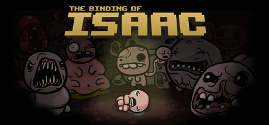
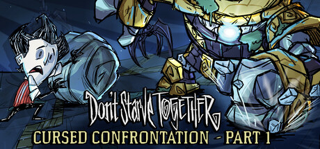
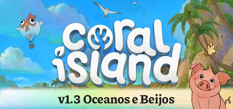
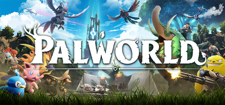

The Binding of Isaac
jogo eletrônico independente do gênero roguelike criado e desenvolvido por Edmund McMillen e Florian Himsl, e lançado para Microsoft Windows, OS X e Linux. O título e o enredo do jogo foram inspirados pela história bíblica do sacrifício de Isaque
Gênero: Ação, Aventura, Indie, RPG
Desenvolvedor: Edmund McMillen, Florian Himsl
Distribuidora: Edmund McMillen
Série: Binding of Isaac
Data de lançamento: 28/set./2011
R$ 8,49

Stardew Valley
Você herdou a antiga fazenda do seu avô, em Stardew Valley. Com ferramentas de segunda-mão e algumas moedas, você parte para dar início a sua nova vida. Será que você vai aprender a viver da terra, a transformar esse matagal em um próspero lar?
Gênero: Indie, RPG, Simulação
Desenvolvedor: ConcernedApe
Distribuidora: ConcernedApe
Data de lançamento: 26/fev./2016
R$ 24,99

Terraria
Terraria é um jogo de RPG de ação e aventura independente produzido pela desenvolvedora de jogos Re-Logic. Possui como características a exploração, artesanato, construção de estruturas e combate a monstros perigosos em um mundo 2D gerado de forma procedural
Gênero: Ação, Aventura, Indie, RPG
Desenvolvedor: Re-Logic
Distribuidora: Re-Logic
Data de lançamento: 16/mai./2011
R$ 32,99

Paralives
Paralives é um jogo de simulação de vida sobre construir casas, vidas e laços. Entre dificuldades e sucessos, aonde sua história levará você?
Gênero: Simulação, Acesso Antecipado
Desenvolvedor: Alex Massé and team
Distribuidora: Paralives Studio
Data de lançamento: 25/mai./2026
R$ 107,99

Don't Starve Together
Don't Starve Together é uma expansão multiplayer autônoma para o jogo de sobrevivência em lugares inóspitos, Don't Starve.
Gênero: Ação, Aventura, Indie, RPG, Simulação, Estratégia
Desenvolvedor: Klei Entertainment
Distribuidora: Klei Entertainment
Série: Klei Entertainment, Don't Starve
Data de lançamento: 21/abr./2016
R$ 27,99

Blasphemous
Blasphemous é um jogo de ação em plataforma brutal com um combate desafiador. Explore o mundo sinistro de Cvstodia, melhore suas habilidades e execute com violência as hordas de inimigos que se colocam entre você e sua peregrinação para interromper o ciclo de perdição eterna.
Gênero: Ação, Aventura, Indie
Desenvolvedor: The Game Kitchen
Distribuidora: Team17
Série: Team17, Blasphemous, The Game Kitchen
Data de lançamento: 10/set./2019
R$ 133,90

Coral Island
Coral Island é um simulador de fazenda relaxante com um modo multijogador! Divirta-se nesta ilha fantástica no seu próprio ritmo: plante e colha com amigos, cuide de animais, tenha relacionamentos, conheça uma enorme gama de personagens e mergulhe no Reino do Povo do Mar.
Gênero: Aventura, Casual, Indie, RPG, Simulação, Estratégia
Desenvolvedor: Stairway Games
Distribuidora: Balor Games
Data de lançamento: 14/nov./2023
R$ 89,99

Oxygen Not Included
Oxygen Not Included é um jogo de simulação de colônia espacial. No interior de uma rocha espacial alienígena, sua equipe dedicada precisará dominar a ciência, superar novas e estranhas formas de vida e utilizar tecnologia espacial incrível para sobreviver e, possivelmente, prosperar.
Gênero: Indie, Simulação
Desenvolvedor: Klei Entertainment
Distribuidora: Klei Entertainment
Data de lançamento: 30/jul./2019
R$ 45,99

Palworld
Este é um jogo completamente inovador de fabricação e sobrevivência em mundo aberto com suporte para vários jogadores. Nele você reúne criaturas fantásticas conhecidas como "Pals" em um vasto mundo e as usa em batalhas ou para trabalhos em construção, fazendas ou fábricas.
Gênero: Ação, Aventura, Indie, RPG, Acesso Antecipado
Desenvolvedor: Pocketpair
Distribuidora: Pocketpair
Série: Pocketpair
Data de lançamento: 19/jan./2024
R$ 88,99

Sifu
Sifu é um jogo de luta realista em terceira pessoa, trazendo combates de kung fu e golpes de artes marciais cinematográficos que conduzem você por uma trajetória de vingança.
Gênero: Ação, Indie
Desenvolvedor: Sloclap
Distribuidora: Sloclap, Kepler Interactive
Data de lançamento: 28/mar./2023
R$ 75,99

Dead Cells
Dead Cells é um "roguelite" de ação em plataforma estilo Metroidvania. Você vai explorar um castelo extenso e em constante mutação... Sem checkpoints. Mate, morra, aprenda, repita.
Gênero: Ação, Aventura, Indie
Desenvolvedor: Motion Twin
Distribuidora: Motion Twin
Série: Motion Twin
Data de lançamento: 6/ago./2018
R$ 47,49

Cuphead
Cuphead é um jogo de ação e tiros clássico, com enorme ênfase nas batalhas de chefes. Inspirado nas animações infantis da década de 1930, os visuais e efeitos sonoros foram minuciosamente recriados com as mesmíssimas técnicas dessa era, com destaque para desenhos feitos à mão, fundos em aquarela e gravações originais de jazz
Gênero: Ação, Indie
Desenvolvedor: Studio MDHR Entertainment Inc.
Distribuidora: Studio MDHR Entertainment Inc.
Data de lançamento: 29/set./2017